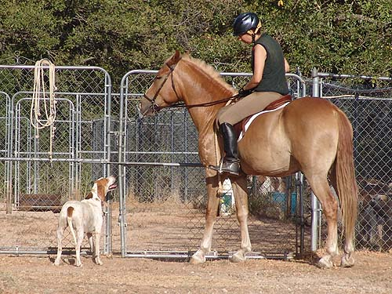

Mo - Roading at the
kennels Mo came out roading along with Thuy.
Amanda was on Thuy, so I couldn't concentrate
very much on Mo. Not a problem for Mo,
and he
was very nice even when he had to pony
Thuy.
Just a little lunge to be sure he
was able to concentrate. He hasn't been away from home for a few months
and I wanted to be sure.
He wasn't sure about the rope hanging
off the saddle, but got used to it.
Practicing ponying before my niece
got up. Thuy was a slug, but Mo was good.
Amanda holding both horses while I
got her stirrups set.
Walking around the kennels. Mo lived
here a month, and doesn't worry about the hounds or other animals that
live here.
Ponying with Amanda. Much easier,
because she can keep Thuy going and tell me if he's going to stop.
Mo seemed to prefer to lead the way,
so we also practiced following.
The other hunt members didn't
recognize him. He's muscling up, and they thought he was Niles.
Waiting to ride out with the other
horses.
Thuy in the lead now.
Meeting Gabrielle's bicycle. It took
him a little time to get used to it, but he did settle down and she was
able to ride it around the pasture with the hounds and horses.
Learning to stand is important. Thuy
is a good role model.
Looking at the cameraman.
Watching the bicycle and not the hounds
like everyone else.
Heading in with Thuy and Amanda.

Encouraging Burnett to go back to
the huntsman. She was hot and wanted to go in the kennels and get a drink.